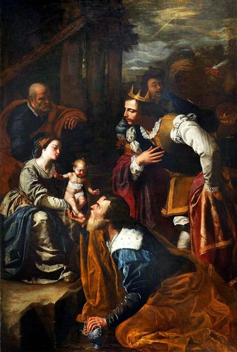
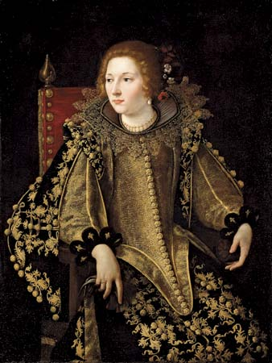
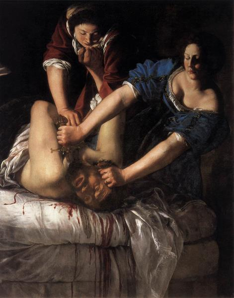
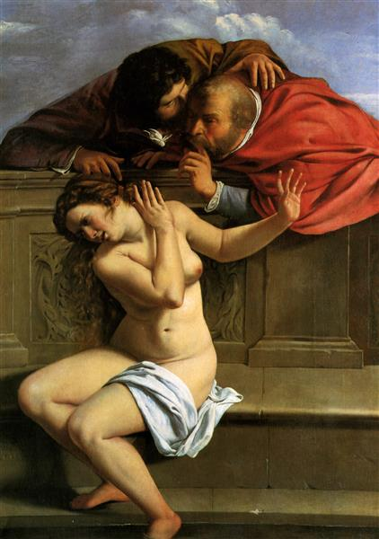
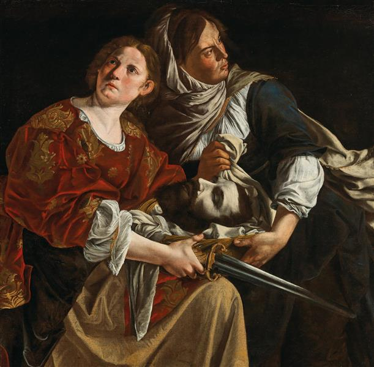

Estilo e Influência Barroca
A obra de Artemisia é frequentemente associada ao movimento caravaggista, devido à sua utilização do claro-escuro, uma técnica que emprega fortes contrastes entre luz e sombra para dar dramaticidade às cenas. Suas pinturas muitas vezes retratam mulheres fortes e determinadas, uma característica que se acredita estar ligada às suas experiências pessoais. Um evento que marcou profundamente sua vida e obra foi o julgamento por estupro que sofreu nas mãos de Agostino Tassi, um amigo de seu pai. Este evento traumático influenciou sua escolha de temas e a maneira como retratava suas protagonistas.
Diversidade de Estilos e Temas
Artemisia não se limitou a um único estilo ou tema. Ela também pintou retratos, cenas religiosas e mitológicas, sempre com uma abordagem única e inovadora. Sua habilidade para capturar a textura da pele, tecidos e luz é notável, e ela frequentemente incluía detalhes ricos e realistas que davam vida às suas pinturas.
|  Adoração ao rei |
 Dama sentada em vista. |
 Virgem e a criança |
Empoderamento Feminino
Entre suas obras mais famosas estão "Judite Decapitando Holofernes" e "Susana e os Anciãos". Estas pinturas não só demonstram sua maestria técnica, mas também uma profundidade psicológica e um olhar empático sobre as dificuldades enfrentadas pelas mulheres. Em "Judite Decapitando Holofernes", por exemplo, Artemisia capta a intensidade e o poder da heroína bíblica com uma visceralidade que raramente era vista na arte daquela época. Da mesma forma, "Susana e os Anciãos" aborda a vulnerabilidade e a resistência das mulheres sob o olhar opressor masculino.
|  Judite Decapitando Holofernes |
 Susana e os Anciãos |
 Judite e a criada |